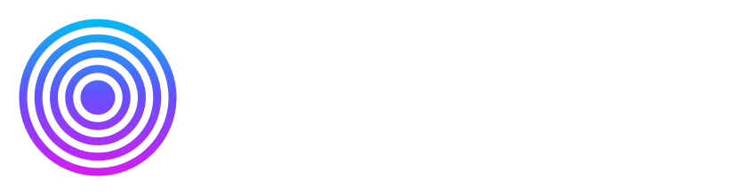

No matches. Try another search or turn off Favorites.
For this surface, thickness controls the width of luminous highlights.
Reaction: soft to snappy · always follows the music · saved per effect.
Five colors together. Fresh palettes blend in continuously.
Waiting for the audio engine.
Play music, then pause it. These meters are capture data, not animation. No sound should mean no pulses.
Comparison only: the scene has no audio input. Meters above still show capture. Click again to restore music response.
Audio stays on this device. Nothing is recorded, uploaded, or played back. Both combines visual energy, not speaker output.
Shows whatever is behind the window. Glass is lighting, not a distortion of your desktop.
Waiting for first rendered frame…
Automatic adjusts resolution to keep effects responsive with less GPU work. Choose 30 fps to save more power, or Native for full display resolution.
Move your effect settings between Browser Studio and the Windows app.
Size and position are remembered automatically.
Vsualize 0.4.0